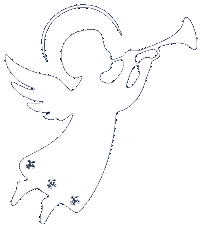
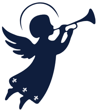

Accueil · Le spectacle
✦ Le spectacle
Un spectacle en plein air et une crèche vivante pour revivre la Nativité, suivis d'une soirée de concerts et de stands de créateurs versaillais.

Samedi 12 décembre 2026, à partir de 16h30
Entrée libre et gratuite✦ Le spectacle
Pendant une heure, mise en scène, musique et lumière font revivre le récit de Noël sur le parvis de la cathédrale. La crèche vivante est jouée par des figurants bénévoles : Marie et Joseph, les bergers, les rois mages, l'étable et l'étoile.
C'est la première édition. Il y a une seule représentation, à 17h00. Le spectacle s'adresse à tous les publics, en famille comme entre amis.
✦ Programme
De l'ouverture du parvis à la clôture, le déroulé de la soirée.
Accueil du public et premières animations musicales sur le parvis de la cathédrale.

Le spectacle et la crèche vivante rejouent la naissance du Christ sur le parvis de la cathédrale Saint-Louis. Durée : 1 heure.
Temps fortConcerts en plein air, stands de créateurs versaillais et buvette & restauration traditionnelle faite maison.
Fermeture progressive du site.
✦ Le lieu et l'accès
Construit entre 1743 et 1754, au cœur du quartier Saint-Louis, le parvis de la cathédrale est l'un des espaces publics les plus chargés d'histoire de Versailles.
Gares de Versailles — distance à pied
✦ Questions pratiques
Non. L'entrée est libre et gratuite, sans billet.
Le parvis ouvre à 16h30. La représentation commence à 17h00 et dure une heure.
Oui. « Un Noël à Versailles » est une sortie familiale, ouverte à tous les âges.
Oui, toute la soirée se déroule en plein air sur le parvis. Pensez à vous couvrir.
L'association Michaëlo, association loi 1901 à but non lucratif. En savoir plus sur l'association.
Figurants, bénévoles, créateurs et partenaires sont les bienvenus pour préparer la soirée.